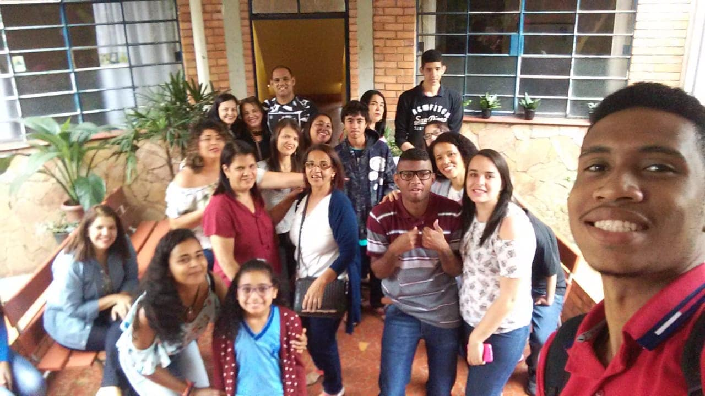

A Associação de Pais e Amigos do Surdo de Itabira, ou APASITA, é uma organização que tem como objetivo oferecer apoio, assistência e recursos para pessoas surdas e suas famílias na cidade de Itabira, Brasil. A associação trabalha para promover a inclusão social e educacional das pessoas surdas.
A Apasita foi fundada em 02 de novembro de 2016 por país de surdos, pelos surdos e também interessados pela causa. Trata-se de uma entidade que ampara o surdo para que o mesmo possa mostrar seu potencial por meio do apoio na educação, na cultura e no mercado de trabalho, buscando assim facilitar sua vida, respeitando sua lingua e sua cultura.
O principal meio de comunicação da Apasita se faz com a Lingua Brasileira de Sinais A Libras e outros recursos de expressão a ela associados é reconhecida como meio legal de comunicação e expressão, descrito no 1º artigo, na Lei nº 10.436/2002 (BRASIL, 2002), com parágrafo único explicando que entende-se como Libras a forma de comunicação e expressão, em que o sistema linguistico de natureza visual-motora, com estrutura gramatical própria, constituem um sistema linguístico de transmissão de ideias e fatos, oriundos de comunidades de pessoas surdas do Brasil
Outro fato importante a destacar é que a Apasita tem como responsabilidade zelar pelo bem comum dos surdos, fazendo diversos trabalhos como acompanhamento dos mesmos em médicos, cartórios, bancos e serviços públicos, pois, até então, não existia em Itabira acessibilidade para os surdos.
As associações de pais e amigos de surdos desempenham um papel crucial na promoção da inclusão e no apoio às necessidades das pessoas surdas em suas comunidades locais. A APASITA, em particular, concentra-se em atender a população surda na cidade de Itabira e em seus arredores.
Surdo Sinalizante: Um surdo sinalizante é alguém que usa a língua de
sinais
como principal forma de comunicação. A língua de sinais é uma língua visual-espacial em que as
palavras e frases são expressas por gestos, movimentos das mãos e expressões faciais. Surdos
sinalizantes usam essa língua para se comunicar entre si e com pessoas que conhecem a língua de
sinais.
Surdo Oralizado: Um surdo oralizado é alguém que se comunica
principalmente
através da fala e da leitura labial. Essas pessoas podem ter recebido treinamento em terapia da
fala
e podem usar aparelhos auditivos para ajudar na compreensão da fala. Eles dependem da leitura
labial
para entender o que as pessoas estão dizendo.
Surdo Implante Coclear (Surdo Implantado): Um surdo implantado é
alguém
que
recebeu um implante coclear. O implante coclear é um dispositivo eletrônico implantado
cirurgicamente que pode ajudar pessoas surdas ou com perda auditiva grave a ouvirem sons. Esses
dispositivos transformam os sons em sinais elétricos que estimulam diretamente o nervo auditivo,
permitindo que as pessoas percebam o som. Muitos surdos implantados usam fala como sua principal
forma de comunicação, embora alguns também possam usar língua de sinais.
Surdo Bilíngue: Um surdo bilíngue é alguém que é fluente em duas línguas,
geralmente sua língua de sinais nativa e a língua oral da comunidade em que vivem. Eles têm
habilidades de comunicação tanto na língua de sinais quanto na língua oral. A abordagem bilíngue
para a educação de surdos reconhece a importância de permitir que os surdos se expressem em sua
língua natural (língua de sinais) enquanto também aprendem a língua oral para melhor interação
com a
sociedade ouvinte.
Alfabeto
Sinal universal "I love you"
Sinais de cumprimento
Sinais de "Surdo" e "Ouvinte"